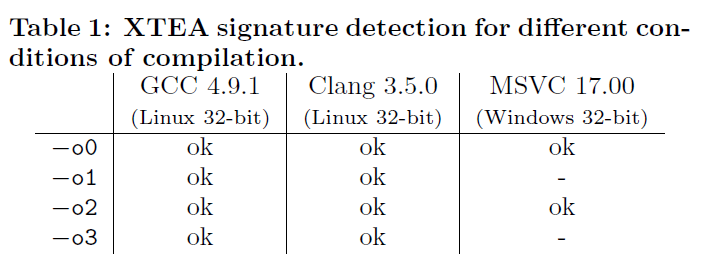

[论文笔记-asiaccs2015]DFG
DFG论文
Lestringant,P., Guihéry,F. and Fouque,P… Automated identification of cryptographic primitives in binary code with data flow graph isomorphism. (2015)In Proceedings of the 10th ACM Symposium on Information, Computer and Communications Security, pages 203–214.
背景
软件用密码算法保护通信安全性以及数据安全。但算法的选择，具体实现方法，输入参数的生成对数据安全性有巨大影响。所以分析有密码的二进制文件安全性时，需要确保没有上述几点影响系统安全。所以首先需要识别并定位密码算法。但分析是耗时费力的，所以需要自动化工具
现有方法：
- 静态分析主要根据常量或I/O关系，大多利用统计特性，可能不准确
- 动态分析性能不太好
缺陷：
- 手动构建签名的准确性
- 依赖启发式代码片段选择
- 仅限于已知密码原语
- constant state
特色
-
静态分析，基于DFG
-
表示数据间依赖。便于提取相关操作的子集以生成精确的签名
-
方便重写程序。可以通过重写DFG移除相同算法的不同实例中的变量
-
-
高效，没有误报（除了签名不够distinctive）
贡献：
-
高效可靠地自动识别定位对称密码算法以及参数
-
归一化以及签名匹配，可以抵御编译器优化和源码变化
-
知名密码库测试并验证方案有效性
具体方案
- 根据汇编代码构建相应DFG
- 用重写规则对DFG归一化
- 在DFG中搜索与密码算法图签名同构的子图
图构建
DFG：表示一系列操作之间的数据依赖关系的有向无环图（Directed Acyclic Graph)
-
顶点：表示算术/逻辑操作或输入变量
-
边：顶点v1到v2的边表示v1(或v1操作后的结果)是v2的输入
根据程序片段F的汇编代码， 将每条指令 i 转换为一组操作 Oi ，而这些操作可能为空（NOP 或分支)，也可能包含多个顶点（可能需要多个操作来重现复杂指令的行为），然后迭代根据F中的指令，构建相应DFG：Gf = (V,E)。其中V是顶点的集合，E是边集
根据输入类型分为以下三种情况：
-
立即数：向Gf中添加一个常量输入变量。该顶点表示立即数的值，且由边连接到Oi
-
寄存器：在写入该寄存器的最后一个值和 Oi 间创建一个边。实际上，这意味着为每个寄存器维护一个数组，其中包含对 Gf 中该值对应的顶点的引用。
引用：
- null：寄存器还未被使用（新的输入顶点将被添加到图中）
- 指向输入变量（寄存器被读取但未被写入）
- 指向操作（最后被写入寄存器的值）
-
内存：load（读取），store（写入）。这两个操作以一个地址作为输入操作数，该地址的计算在Gf中被显式转录。同时还会跟踪程序片段中内存访问的顺序
例子
custom Even-Mansour cipher
S表示S盒，p表示明文，k表示密钥，C表示密文
其x86汇编代码如下
其构建的DFG图如下：
矩形框中的表示输入变量，圆框中表示操作
归一化
目的：在不改变DFG语义的情况下做出调整以便匹配算法子图。即消除开发人员、编译器优化或反汇编导致的不同。
三种规则：
Normalization Rules
多个指令可以执行相同的操作时使用。
Memory Access Simplification Rules
规范化的图应该不需要任何内存操作，除了那些与输入或输出变量相对应的操作
- store after store：移除第一个store
- load after store：移除load，load的输出与store的输入一样
- load after load：合并，两者操作的输出一样
但还存在aliasing的问题，当两个不同的顶点等于相同的地址值时，在这种情况下，为两个顶点计算的地址序列是不完整的。这会造成两种后果：
-
miss additional simplification cases。但这不算真正的问题，因为可以假设这些最后会被其他简化规则处理（如公共子表达式的消除）
-
用不完整的序列进行简化可能不可逆地破坏代码语义，如以下几种情况：
- 两store间有aliased load
- store与load间有aliased store
- 两load间有aliased store
解决方法：当检测到一个可能的别名问题时，将内存操作的序列分割开来。其结果是一组序列不存在任何别名矛盾，并且可以安全地进行简化。但缺点在于如果过于inclusive，一些合法的简化案例会被忽略。
比如下图中，load1和load4都是load地址(esp+8)，中间没有写入，即没有aliasing问题，所以可以进行合并
General Simplification Rules
目的：
- 发现哪些内存访问是在同一地址进行的，以实现前面所述的内存简化
- 优化未被优化代码的DFG图。由于编译器优化不一定可逆，所以如果需要使未被优化的代码与优化的代码的归一化后的DFG一样，只能优化未被优化的代码。
假设下面的指令序列及其优化后的对应序列：
假设某个编译器刚好执行了这种优化。很明显，这将很难被撤销，而我们无法猜到在序列的最后有一个右移操作。它的规范化表示应该肯定是优化后的结果。因此，每次遇到原始序列时，它都必须被优化。
但由于提出的straight line假设，不需要为配合现代编译器的数据优化做大量工作，只需局部应用于单个基本块（有入口点与出口点）
规则主要分为：
-
公共子表达式的消除：如果两个操作共享同一组输入操作数，那么它们显然会产生相同的输出。因此，它们中的一个可以安全地从图中删除。
合并由同一组操作数(基数、索引、比例和位移)产生的有效地址。因此，一些内存访问将显式地共享图中的地址顶点。
比如load1和load4地址都是（esp+8)所以可以删掉其中一组操作，两个load共享同一地址顶点。
-
常数简化
以下两种情况可进行常数简化：
- 如果算术/逻辑运算的每个输入操作数都是一个常变量。操作可以用结果代替
- 如果一个算术/逻辑运算有一个操作数等于该运算的ientity element或absorbing element(如果它们存在)
有时需要重排associative operations的序列。该种规则合并涉及常变量的连续关联运算
如下图中两个加4被化简为加8
另一种重排策略是distribution，这对于内存地址的简化尤为重要，因为x86寻址模式的比例参数。所以该种规则分配涉及常变量的分配操作
signature
人工构建签名。
macro signature
目的：针对算法的各种各样实现，有时需要多种签名。为了减少它们的数量，引入宏签名来构建上下文无关的graph grammar。
思想：在每次检测到签名时将一个特殊的顶点附加到DFG。
一个宏签名是一个包含一般的DFG顶点（终端符号）和代表其他签名的顶点（非终端符号符号）的图。
意义：
- 减少需要测试的签名数量。
没有宏签名时，要测试的签名数量为
用宏签名，每个备份可以被独立搜索，只需要
个签名
- 将大的图分解成更小的图
例子
如果我们要定位密码算法的参数，那么对于明文，密码，密钥，至少一个连接的路径，签名至少都要有一个顶点。
首先创建了一个签名，包含对替换盒的访问（地址计算加内存读取）
然后，右边图中一个新的顶点后(sig1），对应于第一个签名的成功匹配
最后成功匹配custom Even-Mansour算法的签名
子图同构
给定归一化的DFG与signatures，得到DFG中包含哪些signatures。采用Ullmann子图同构算法
子图定义：如果Va属于Vb且Ea属于Eb，那么Ga = {Va, Ea}是Gb = {Vb, Eb}的子图
同构定义：
那么Ga = {Va, Ea}与Gb={Vb, Eb}同构
具体算法如下（深度优先搜索树）：
-
对签名中的每个顶点v属于Vs，维护一个可能的分配集Av，其被初始化为D中标签与v相同的顶点
-
递归搜索，找到满足条件的f即表示找到了有效的同构子图；否则UPDATE(Av)进行相应剪枝操作，然后继续搜索
-
剪枝：
测试评估
为什么该方法没有误报：
- 归一化过程保留语义。
- Ullmann算法得到是精准的。虽然也可能签名不够distingctive，其他算法的DFG也可能匹配该签名。
XTEA
http://en.wikipedia.org/w/index.php?title=XTEA&oldid=618892433 的c语言实现

Crypto++, LibTomCrypt, Botan，均成功检测。但存在密钥调度问题，LibTomCrypt中在早期初始化阶段进行得到round key buffer；Crypto++或Botan则在主要的加解密循环中计算。而这种差异不能通过归一化消除，所以应在签名级别处理。因此去掉签名中的密钥调度来得到对不同版本保持一致性的签名。虽然密钥无法识别，但是round key buffer和密钥调度的最终操作是作为签名输入变量的一部分被识别的
MD5
RFC中的C语言实现
除MSVC外，代表Feistel网络的final macro signature的识别是成功的。
在MSVC的情况下，并不是所有的64轮签名都能正确检测到第二个信息块的。因此取决于每个回合的正确识别最后的签名在第二个消息块中没有被检测到。该问题可以用以下两点来解释：
- Rotation：每轮函数都包括循环移位。由于C中没有循环移位运算符，需要用两个移位和一个or运算符来实现。有些编译器能识别并转换为x86中的循环移位指令。但MSVC并不总是进行这样的转换，但确定重写规则来识别并将其转换为一个循环移位的顶点是非常困难的。所以在签名层面解决该问题，同时说明macro signature的好处（64轮的总组合数是2^64，而用macro signatures只需要轮签名数量的两倍）
- constant state：第一个信息块的状态被常量初始化。由于之前涉及初始状态的操作与周围的操作合并以使数字简化的重写规则，MSVC中第二个信息块的开始若有扩展形式的循环移位指令，将会影响预期的签名模式。该问题尚未被解决，希望能有消除分布在几个顶点上的公共子表达式的方法。
Crypto++, LibTomCrypt and OpenSSL中md5的测试均成功，因为循环移位都是用x86指令集实现的，且初始状态未被视为常量，因为API设计初始化在代码片段之外的另一个函数中执行。
AES
Gladman网站提供的源代码
Crypto++,LibTomCrypt and Botan
Crypto++只能检测解密的算法，加密由于其使用MMX和SSE2指令（DFG构建时不支持）未被成功识别。其余均成功检测
性能
子图同构是NP完全问题，但大多数情况都可以有校解决
每一列对应一个代码片段（来源于LibTomCrypt），每一行对应一个签名
-
灰色表示未成功匹配，能很快出结果（<1ms)
-
大的签名（涵盖几个回合的签名）所花费的时间的时间明显多于较小的签名（仅覆盖一个回合)。因此可以用macro signature来减少签名的大小。但顶点的数量并不是影响执行时间的唯一参数，有时较大的签名意味着其顶点之间有更强的结构约束，子图同构算法就能更快地收敛到解决方案
-
每条重写规则都是与顶点数量成线性关系的，除了普通的子表达规则是二次的（至少对naive implementation)。然而，如前所述，重写规则规则是迭代应用的，直到达到一个平衡点。因此，执行时间也取决于原始DFG与归一化DFG之间的距离。在实践中归一化的执行时间并不超过签名匹配的执行时间
改进
- 通过利用macro signature，涵盖块密码的操作模式
- 自动识别公钥密码算法
- 从参考实现中自动生成签名